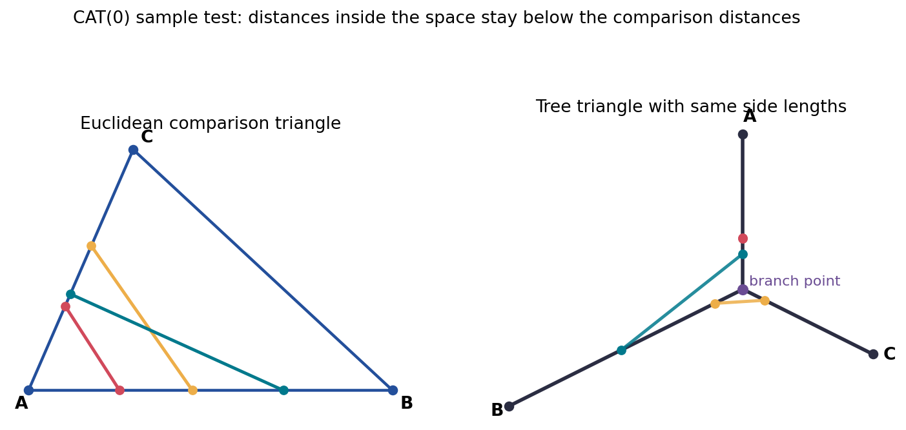
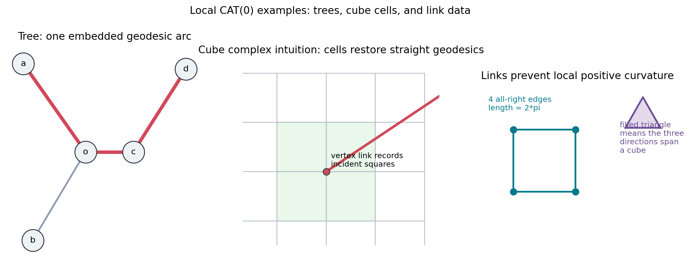
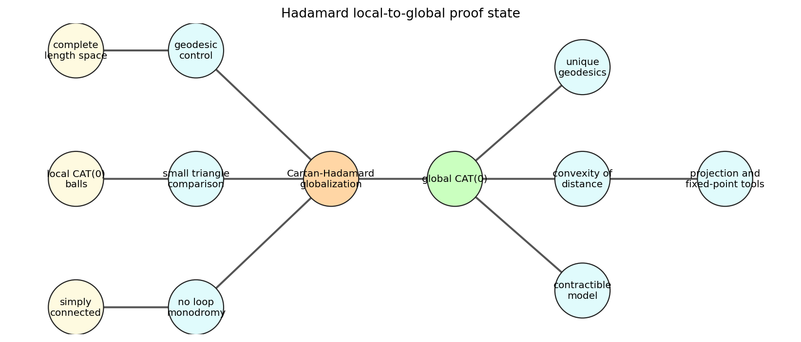
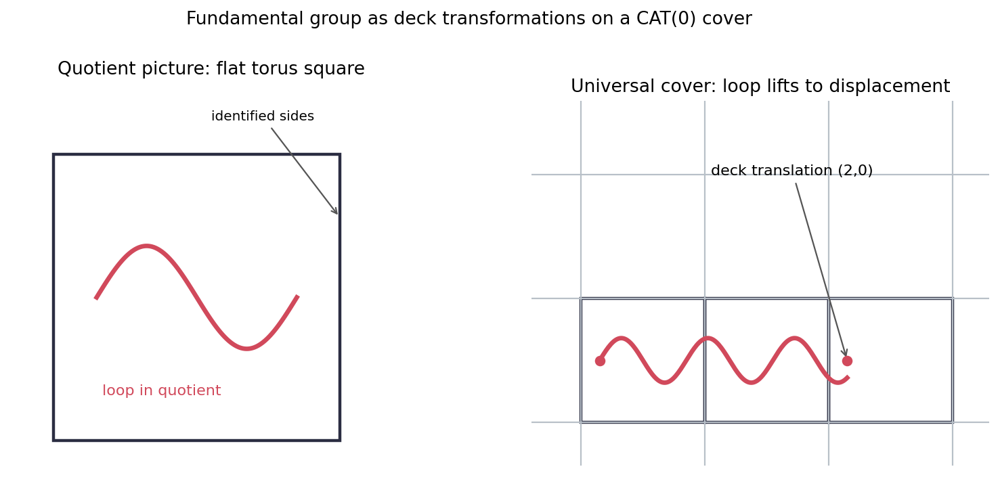
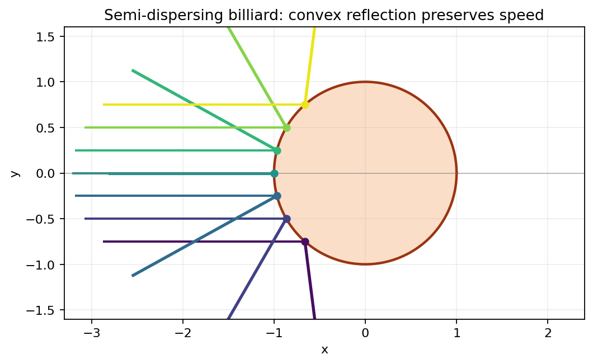

A Course in Metric Geometry, Chapter 09
Spaces of Curvature Bounded Above
CAT comparison, Hadamard spaces, fundamental groups, and semi-dispersing billiards
CAT
Distance comparison replaces sectional-curvature formulas.
0
Nonpositive upper bounds force thin triangles.
16
Slides from the chapter notebook and source span.

Opening visual: a triangle is tested by comparing distances between corresponding side points.
Open by emphasizing the chapter's governing shift: curvature is no longer introduced through smooth tensors, but through inequalities between distances. The title puts CAT comparison first because the later Hadamard, covering, and billiard material all reuse that metric habit. Point students to the source span and notebook path as the provenance for the visuals and numerical checks.
Source: Chapter 09, printed pp. 307-350; PDF pp. 322-365 Notebook: chapter-09-spaces-of-curvature-bounded-above
Section 9.1
Every CAT Statement Starts With a Model Triangle
Model Space
$$M_\kappa = \begin{cases} S^2_{1/\sqrt{\kappa}}, & \kappa \gt 0 \\ \mathbb{E}^2, & \kappa = 0 \\ \mathbb{H}^2_\kappa, & \kappa \lt 0 \end{cases}$$
The comparison triangle has the same three side lengths as the triangle in the candidate metric space.
What Gets Tested?
Pick points on two sides of a geodesic triangle.
Locate corresponding points in the model triangle.
Compare the two side-point distances, not angles or drawings.
For \(\kappa=0\), the model is the Euclidean triangle.
The model triangle is the measuring instrument. Students often look for curvature in a picture of the space itself, but the CAT condition asks for a calibrated comparison: same side lengths, corresponding side parameters, and then a distance inequality. Stress that the model changes with kappa, while the logical form of the test stays the same.
Grounding: Section 9.1, CAT comparison definitions Visible source span: printed 307-350; PDF 322-365
Section 9.1
CAT(\(\kappa\)) Means Triangles Are No Fatter Than the Model
Artifact check: three sampled tree distances are below their Euclidean comparison distances.
Comparison Inequality
$$d_X(p,q) \le d_{M_\kappa}(\bar p,\bar q)$$
for points \(p,q\) on triangle sides and matching comparison points \(\bar p,\bar q\).
Recorded Check
For the tree toy model, the minimum slack in the sampled CAT(0) inequalities is approximately 0.924 .
Use the image as a definition rehearsal. The tree side points can be extremely close after the triangle collapses through the central branch, while the Euclidean comparison triangle keeps them separated. The numerical slack is not a proof of the theorem, but it gives the class a concrete inequality to inspect before the formal language hardens.
Grounding: Section 9.1; artifact cat-comparison-inequality.png Check: cat-comparison-checks.json
Section 9.1
A Tree Is CAT(0) Because Triangles Collapse to Tripods
Metric Tree Heuristic
There is a unique embedded arc between any two points.
Three pairwise arcs share a central branch pattern.
The triangle has no interior area to become fat.
The CAT comparison inequality is therefore visually strict in many samples.
Toy Numbers
The notebook's sample triangle has side lengths \(4.00\), \(2.889\), and \(3.892\), represented by branch lengths about \(1.499\), \(2.501\), and \(1.390\).
The purpose is diagnostic: measure in \(X\), compare in \(M_0\).
This slide keeps the tree example separate from the general theorem. In a tree, the whole phenomenon is easy to see because triangles reduce to a shared center and three legs. That makes it a good first CAT(0) example, but it is deliberately too simple to represent all nonpositive-curvature spaces.
Grounding: Section 9.1, tree comparison example Check: tree side-point distances below Euclidean comparisons
Section 9.1
Local CAT(0) Geometry Can Be Combinatorial

Tree uniqueness, square-cell geometry, and all-right link data sit in one local diagnostic artifact.
Two Friendly Models
Metric trees: unique path from \(a\) to \(d\) in the recorded sample.
Square cells: straight distance through cells can beat edge-only travel.
Cube complexes: the vertex link stores local angle information.
All-right links turn a metric question into a finite combinatorial test.
The contrast between edge-path distance and cell distance is worth lingering on. A square grid drawn on paper can be interpreted as a graph or as a cell complex, and those are different metric spaces. The local CAT condition depends on the metric interpretation, so the link diagnostic is not cosmetic bookkeeping.
Grounding: Section 9.1; artifact cube-tree-link-examples.png Check: local-cube-tree-checks.json
Section 9.1
The Link Around a Vertex Detects Hidden Positive Curvature
Local View
Stand at a vertex and record the directions of incident cells. The link is the space of those directions.
Angle Memory
An all-right cube complex labels link edges by right angles, so short link loops signal compressed angle.
Notebook Calibration
The recorded four-right-angle cycle has length \(2\pi\), matching a flat local threshold.
Teaching Caution
Local pictures are not global conclusions. A neighborhood can pass a comparison test while loops or covering behavior still matter.
This is the moment to separate local and global nonpositive curvature. The link captures what happens infinitesimally around a vertex in a polyhedral model, but the chapter soon adds completeness and simple connectedness to globalize the result. Tell students that a short loop in a link is the discrete analogue of too much positive curvature packed into a point.
Grounding: Section 9.1, local CAT(0) and links Visible invariant: link cycle length \(2\pi\)
Section 9.2
Hadamard Spaces Are the Global CAT(0) Payoff
Hadamard Space
A complete geodesic CAT(0) space. In the local-to-global theorem, a complete, simply connected, locally CAT(0) space becomes CAT(0).
Local CAT(0) comparison in small neighborhoods
Simply Connected no loop obstruction remains
Global CAT(0) Hadamard behavior appears
The theorem has the same emotional role as the classical Cartan-Hadamard theorem: local nonpositive curvature plus the right global hypotheses removes ambiguity. Avoid presenting it as a purely topological statement. Completeness, geodesic structure, and the metric comparison condition are all doing work in the background.
Grounding: Section 9.2, Hadamard spaces Source span: printed 307-350; PDF 322-365
Section 9.2
The Proof Has Dependencies, Not Just a Single Trick

The notebook records 12 proof-state nodes and 11 edges in the dependency graph.
How to Read the Map
Local CAT data supplies comparison control.
Simple connectedness prevents competing lifted homotopy classes.
Completeness keeps geodesic and limiting arguments available.
Convexity and uniqueness are downstream consequences, not assumptions.
Use this graph as a proof-navigation slide. The aim is not to recite every lemma, but to keep students from flattening the theorem into a slogan. The dependency map also explains why later group-action arguments can be short: they inherit uniqueness and convexity from the Hadamard package.
Grounding: Section 9.2; artifact hadamard-proof-dependencies.png Check: hadamard-checks.json
Section 9.2
In a Hadamard Space, Geodesics Stop Branching Globally
Consequence
Between any two points in a Hadamard space, the geodesic segment is unique.
Why CAT(0) Forces It
If two distinct geodesics joined the same endpoints, CAT(0) comparison would make the midpoint distance no larger than the Euclidean comparison distance between identical midpoints: zero. Hence the midpoints agree, and iteration pins down the whole segment.
This proof sketch is a good place to show the strength of comparing side points. The endpoints are the same, so the comparison triangle degenerates; the CAT inequality then forces corresponding midpoints to coincide. Repeating the midpoint argument gives uniqueness without invoking smooth calculus or Jacobi fields.
Grounding: Section 9.2, Hadamard consequences Notebook theme: unique geodesics from CAT(0)
Section 9.2
Distance Between Synchronized Geodesics Behaves Convexly
Convexity Pattern
$$t \mapsto d(\gamma(t),\eta(t))$$
is controlled by CAT(0) comparison when \(\gamma\) and \(\eta\) are geodesics run at matching speed.
Recorded Shadow Check
The Euclidean sample has positive discrete second differences; the minimum recorded value is about 0.0032 .
This is a numerical shadow of the theorem, not a replacement for it.
Convexity is the workhorse consequence that quietly powers projection arguments, fixed point arguments, and group-action estimates. The notebook check samples a Euclidean analogue because it is easy to compute and plot. Make clear that the theorem in a Hadamard space is stronger than the finite numerical sample on the slide.
Grounding: Section 9.2, convexity of distance Check: euclidean_convexity_shadow_pass=true
Section 9.3
Nonpositive Curvature Becomes Algebra Upstairs
Covering-Space Translation
Start with a locally CAT(0) space \(Y\).
Lift to the universal cover \(\widetilde{Y}\).
Use Cartan-Hadamard to get CAT(0) geometry upstairs.
Read \(\pi_1(Y)\) as deck transformations of \(\widetilde{Y}\).
Group-Geometric View
A loop downstairs is not just a homotopy class; upstairs it moves a base lift by an isometry of the CAT(0) universal cover.
The key transition is from loops to isometries. Once the universal cover is CAT(0), algebraic questions about the fundamental group can be phrased as metric questions about how deck transformations move points. This prepares the torus calibration and explains why the chapter cares about covers after proving Hadamard behavior.
Grounding: Section 9.3, fundamental group of a nonpositively curved space Source span: printed 307-350; PDF 322-365
Section 9.3
The Flat Torus Makes Deck Transformations Visible

Downstairs loops lift to translated endpoints in the Euclidean cover.
Calibration Facts
The model group is \(\mathbb{Z}^2\).
Two standard translations commute in the recorded check.
A nontrivial translation has positive displacement.
The visible cover is \(\mathbb{R}^2 \to \mathbb{R}^2/\mathbb{Z}^2\).
The torus example should be sold as calibration, not as the whole theory. It lets everyone see the lift of a closed loop ending at a translated point, and it makes deck transformations concrete. Then the same language can be used in less visual CAT(0) universal covers where the group still acts by isometries.
Grounding: Section 9.3; artifact fundamental-group-cover-action.png Check: fundamental-group-checks.json
Section 9.3
The Payoff Is a Metric Action of \(\pi_1\)
Object
Downstairs
Upstairs
Point
A point of \(Y\)
A chosen lift in \(\widetilde{Y}\)
Loop
Element of \(\pi_1(Y)\)
Deck transformation moving lifts
Curvature
Local CAT(0)
Global CAT(0) after Cartan-Hadamard
Algebraic signal
Homotopy class
Displacement by an isometry
Flat-Torus Check
Translation lengths recorded in the notebook include \(0\), \(1\), and \(2\) for \((0,0)\), \((0,1)\), and \((2,0)\).
This table is meant to organize the dictionary that students will use later in geometric group theory. The fundamental group is no longer merely a list of loops; it acts on a CAT(0) space by deck transformations. The displacement values in the torus example make the abstract action measurable.
Grounding: Section 9.3, cover action dictionary Check: nontrivial translation has positive displacement
Section 9.4
Billiards Mix Flat Motion With Convex Reflection

The ray travels linearly between impacts and reflects from a convex scatterer.
What Survives a Collision?
Speed is preserved by the reflection law.
The incident and outgoing angles agree relative to the normal.
The convex boundary drives the qualitative dispersing behavior.
No monotonic outgoing-angle claim is used here.
The billiard example is included as a geometric system with flat pieces and curvature-sensitive boundary behavior. Be explicit about the invariant claims: speed preservation and equal-angle reflection are the reliable checks. Do not infer monotonicity of the wrapped outgoing angle from the lab values; the chapter artifact records that this monotonicity check is false.
Grounding: Section 9.4; artifact semi-dispersing-billiard-reflection.png Check: reflection law residuals near machine precision
Section 9.4
The Reflection Law Gives the Stable Invariants
Speed
The maximum recorded speed residual is \(2.22\cdot 10^{-16}\), effectively zero at double precision.
Angle Law
The maximum recorded equal-angle residual is \(3.33\cdot 10^{-16}\).
Parameter Sweep
Impact height changes the collision point and outgoing direction, but the wrapped outgoing angle is not monotone.
Avoid This False Shortcut
Dispersing behavior should be discussed through reflection geometry and invariant checks, not through a claimed monotone list of wrapped angles.
This slide directly addresses the diagnostic warning. The numerical lab is useful precisely because it separates confirmed invariants from tempting but false summaries. Invite students to notice the jump through pi in the wrapped angles; that is why a naive monotonicity sentence would mislead the discussion.
Grounding: Section 9.4; check billiard-reflection-checks.json Recorded flag: outgoing_angle_increases_with_impact_height=false
Sections 9.1-9.4
Lab Recap: Inspect the Inequality, Then Inspect the Action
Interactive artifact: ../html/semi-dispersing-billiard-lab.html
Chapter Takeaways
CAT(\(\kappa\)) is a side-point distance comparison rule.
CAT(0) examples need not be smooth: trees and cube complexes are central.
Hadamard hypotheses globalize local nonpositive curvature.
Universal covers turn \(\pi_1\) into a metric group action.
Billiards preserve speed and reflection angle at convex collisions.
Close by connecting the four sections into one workflow. First, formulate curvature through comparison triangles. Second, diagnose examples locally with trees, cells, and links. Third, globalize via Hadamard hypotheses. Fourth, use the universal cover and billiard lab to see how CAT-style geometric reasoning controls actions and dynamics.
Grounding: Sections 9.1-9.4; source coverage check includes all four sections Notebook and artifacts are original chapter materials